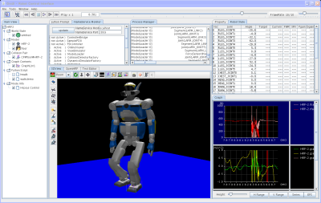

OpenHRP3の概要OpenHRP3 (Open-architecture Human-centered Robotics Platform version 3)は ロボットのソフトウェア開発・シミュレーションのための 統合ソフトウェアプラットフォームです． OpenHRP3を用いることで、ユーザは独自のロボットモデルと制御プログラムを動力学 シミュレーションで検証することが可能となります。また、OpenHRP3はロボットのソ フトウェア開発に活用可能な各種のソフトウェアコンポーネントと計算ライブラリも提供します。 OpenHRP3は，内閣府科学技術連携施策群次世代ロボット連携群のテーマの一つである 「分散コンポーネント型ロボットシミュレータ」プロジェクトにおいて開発されたものです． 主要な動力学計算エンジンは 東京大学大学院情報理工学系研究科 中村研究室が、 グラフィックスユーザインターフェイスは ゼネラルロボティックス株式会社が、 その他の部分については独立行政法人産業技術総合研究所 知能システム研究部門の ヒューマノイド研究グループと タスクインテリジェンス研究グループが 開発しました。 また「分散コンポーネント型ロボットシミュレータ」プロジェクト終了後も、 「次世代ロボット知能化技術開発プロジェクト」 の一環として開発中のOpenRT Platform の一部として産業技術総合研究所が開発を継続しています。 今回開発した Version 3 (通称 OpenHRP3) は 以前に配布していた OpenHRP version 2 に対して多くの改良がなされたものとなっています。 また、OpenHRP3ではオープンソースによる配布を行っています．
 OpenHRP3の特徴OpenHRP3は分散オブジェクトシステムとして設計されており、 各種機能を提供するサーバプログラム群と、 サーバの管理を行うクライアントプログラムから構成されます。 この構成により、大規模なシミュレーションシステム開発における保守性・可搬性を向上させています。 OpenHRP3はロボットのための分散ミドルウェアである OpenRTM に対応します。 現在のところ、コントローラをOpenRTMのRTコンポーネントとして開発することが可能です。 将来的には、シミュレーション対象となる各種センサ類もRTコンポーネントとしてアクセス可能になる予定です。 OpenHRP3の力学計算エンジンは、東京大学の開発によるものと、 産総研の開発によるものがあります。 それぞれ、以下のような特徴があります。
|